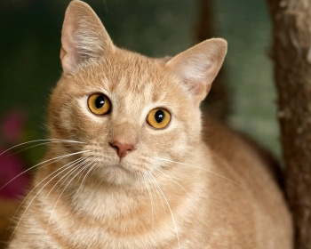

|  | Добрый, милый, ласковый, очень умный и, к тому же, очень красивый питомец - это, несомненно, азиатская табби. Эти кошки - лучший друг каждого человека, включая детей. Они прекрасно чувствуют своих хозяев, умеют оказать эмоциональную помощь в трудную минуту, и прекрасно адаптируются к различным условиям проживания. Они любят внимание, но не требуют его с болезненной настойчивостью.Азиатская табби - кошка средних размеров, имеющая округлую, объёмную грудную клетку, длинный хвост и лапы чуть длиннее среднего. Уши средние, слегка наклонены вперед, мордочка правильной клиновидной формы. Может иметь широкое разнообразие оттенков. В этом плане, единственным исключением, за которое могут дисквалифицировать с выставки, является пегий окрас, а также отсутствие полосатого узора (табби) на мордочке или теле. Продолжительность жизни до 15 лет. |